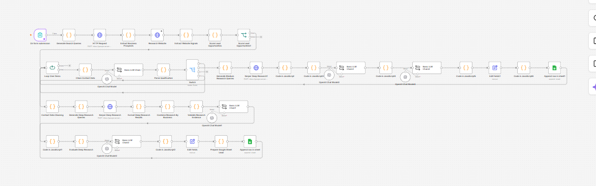

SYS.01 — AI • AUTOMATION • LEAD GENERATION
AI-Powered Lead Generation System
Discover, enrich, qualify and organize prospects
An automated lead-generation pipeline designed to discover, enrich, qualify and organize potential business prospects using search, data enrichment, AI processing and workflow automation.
PROBLEMManual prospecting, messy lists
SYSTEMDiscover → enrich → qualify
TECHn8n · AI · APIs
OUTCOMERepeatable qualification flow

DISCOVER↓ENRICH↓AI QUALIFY↓ORGANIZE↓OUTREACH-READY